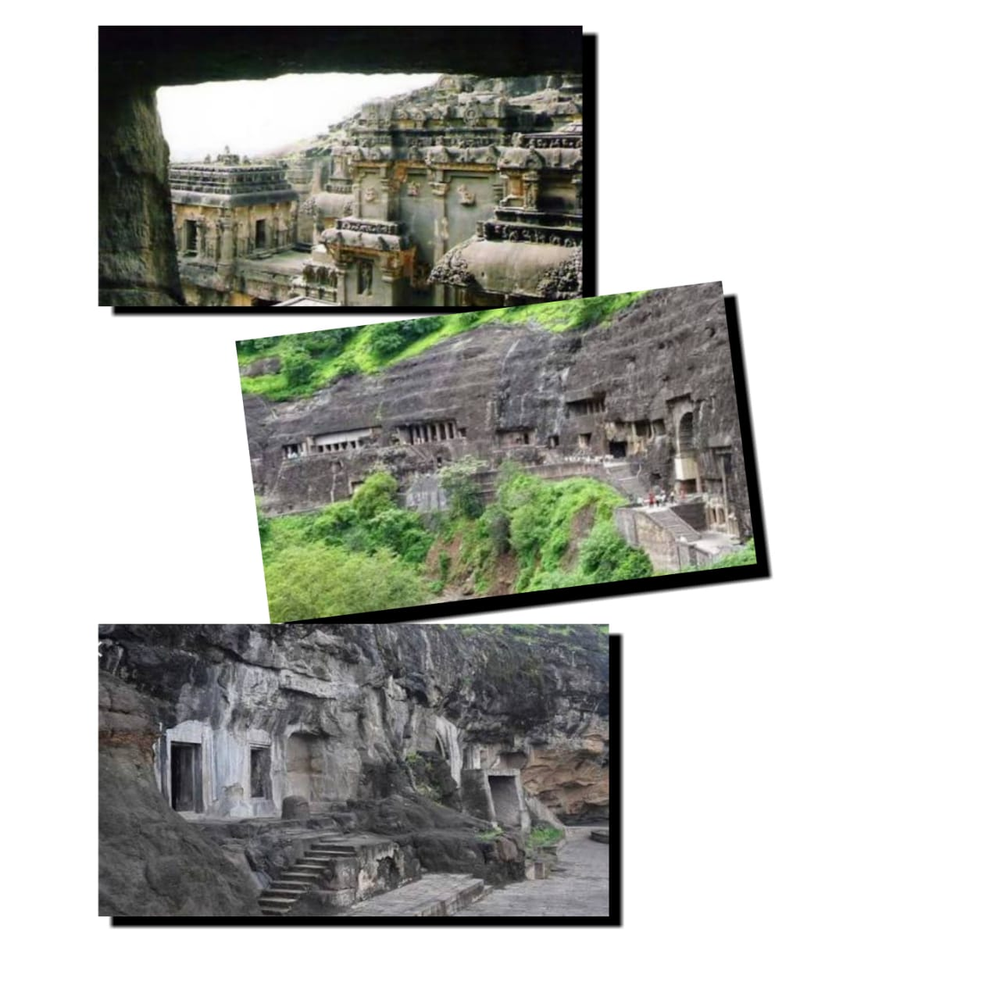

The Aurangabad caves are a medley of twelve artificial rock-cut caves which are located in Aurangabad in the state of Maharashtra, only 2 km from Bibi ka Maqbara. There are a total of twelve caves of Buddhist origin, which are classified into three groups depending on location. The first group comprises of 1-5; second group, 6-9 and the third group, 10-12 caves.
The cave 1 and cave 2 are viharas. Cave 1 is an incomplete viharas which is in a dilapidated condition. Cave 2 has a Buddha Shrine at the rear. The remaining of the caves pertains to the Kalachuri Dynasty.
The cave 7 is most intricately adorned with embellishments and flaunts a central shrine with outer corridor for circumambulation. The veranda’s front wall has splendid representation of litany panel of Bodhisatva and Avalokitesvar. The Avalokitesvara litany depicts the Bodhisatvva Padmapani as the “Saviour of the Eight Great Perils ”like theft, demon, fire, lion, shipwreck, elephant, snake, monkey etc. The cave 9 depicts sculptured panel exhibiting Buddha in a state of nirvana.
HISTORY OF THE ATTRACTION
These caves were excavated during the 6th-7th century period the soft basalt rock. The second and the first group of caves are separated by 500 meters. The former cave group is situated on the eastern, and the latter on the western side. The third group is situated east to the second group. According to the historians, cave (lll) came into existence earlier than cave (I). Cave (I) displays neat designs of scrolls, fretwork, geometrical designs, tassels, flowers, crafted to architectural excellence.
THINGS TO DO & SEE IN AND AROUND
The Aurangabad caves, popularly known as the mini Ellora caves by the locals is located very close to the remarkable architectural marvel Bibi ka Maqwara. An hour is required to explore the caves. The engineered pillars, design and the intricate carvings is worth mentioning. It is an epitome of monolithic architecture. The complex is divided into three groups of caves with innumerable steps to reach them.
HOW TO REACH
These caves can be reached by both rail and road. The Aurangabad Railway Station is connected to Mumbai, Nasik, Navi Mumbai and Manmad. The tourists can reach the caves from the station by availing private car services. Aurangabad is even connected to cities like Nagpur, Pune and Mumbai through the NH-4 by state and local transport buses.
OPENING AND CLOSING TIME
It is open everyday for the visitors and the preferred time of visit is between 9a.m.-5p.m.
ENTRY FEES
The entry ticket fee is Rs.10 (per person) for the Indian tourists and Rs.100 (per person) for the foreign tourists.
BEST TIME TO VISIT
The best time to visit Aurangabad is between November and February to escape the scorching heat of summer. Tourists can visit between August-October to experience the beauty of the caves washed with rain.